Beyond Audio Playback: Building Interactive Audio Systems in Godot


Hi, I'm Werner. I'm a full-time game developer, software engineer, artist and musician. I created godot-csound, godot-lv2-host, godot-vst3-host, and godot-distrho — projects focused on real-time synthesis, plugin hosting, and interactive audio in Godot.
I’ve been a hobbyist indie game developer for over 20 years, and I have professional experience as a software engineer building and maintaining microservices at scale.
Musicians use instruments, audio plugins and a digital audio workstation to create music and sound effects. The audio is then exported as a WAV file and imported into Godot.
In Godot the imported sound files, music loops, one-shot effects, volume changes and crossfades are used to drive the audio.
This works, but the audio often stays separate from the game logic instead of becoming part of the interactive system.
Optionally game developers use tools like FMOD or Wwise to create sophisticated audio tracks or a custom audio engine.
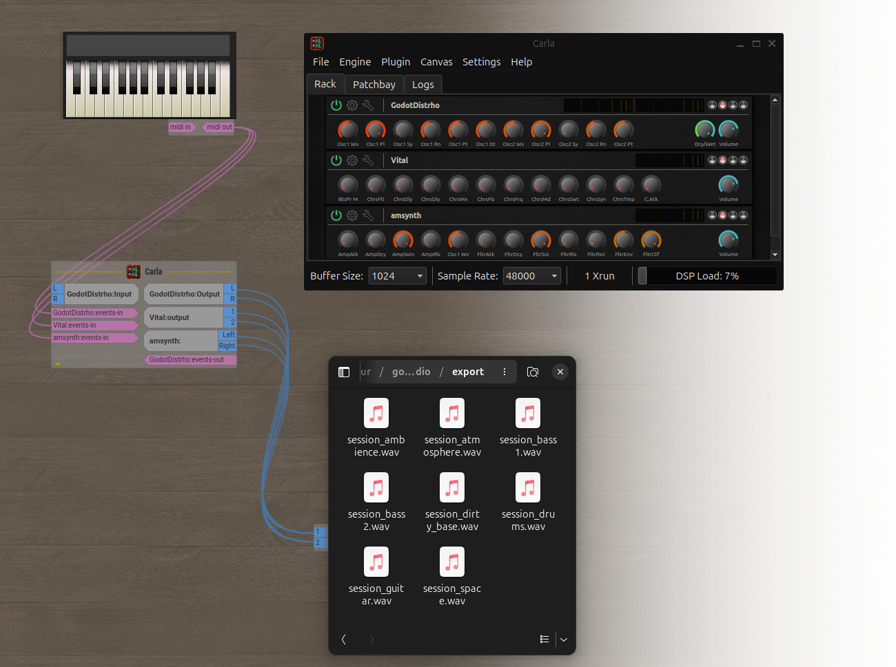
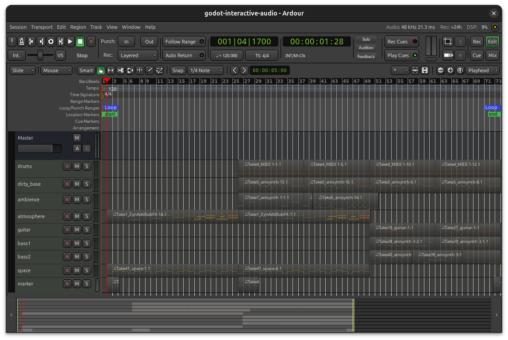
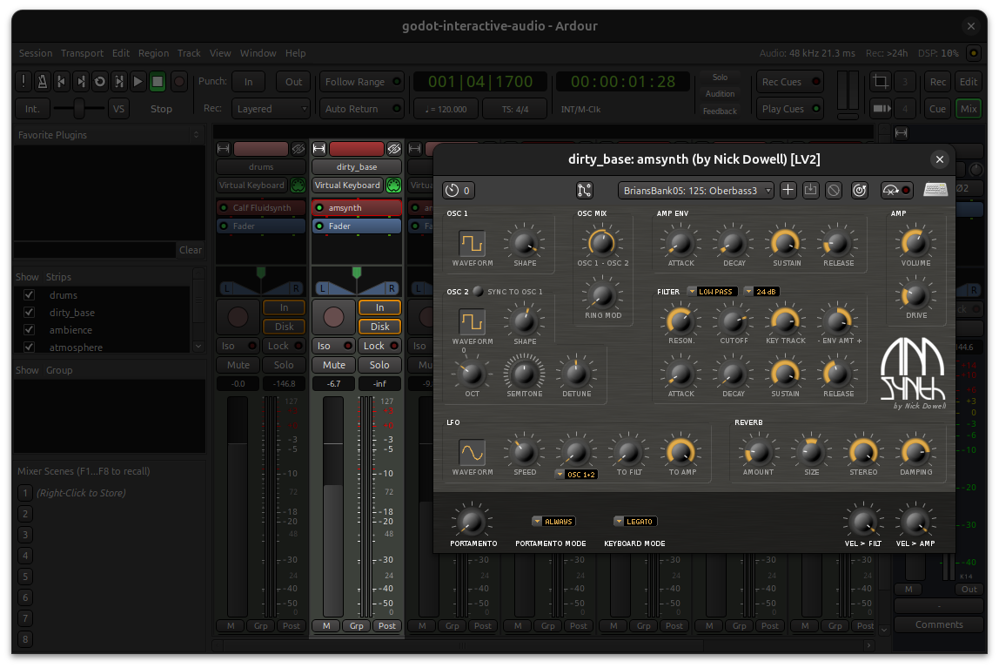
Extend Godot by using existing audio libraries via GDExtensions and add functionality that brings Godot closer in features to a digital audio workstation and audio plugin development environment.
Allow Godot to be used to create audio plugins, host existing audio plugins and expose the most important features that drive the audio during music creation in a DAW with a focus on dynamic audio playback inside Godot.
Expose these new audio features via GDScript to allow game events to update the audio and allow for easy-to-use integration in the Godot editor.
To show how these projects work together, I’ll finish with a Godot demo that:
godot-csound for synthesis, procedural/interactive sound, dynamic score and programmable instruments and events.
godot-lv2-host and godot-vst3-host for hosting audio plugins in Godot. Allows for seamless use of the same audio plugins available for a DAW.
godot-distrho for building LV2 and VST3 audio plugins with Godot. Allows using Godot directly inside of a DAW as an audio plugin.
godot-synths is an example synthesizer written in Godot using Csound and DISTRHO that can be used in all supported platforms and also as an audio plugin in a digital audio workstation.
godot-csound is a GDExtension that exposes Csound's functionality to Godot and supports the following platforms: Windows, macOS, iOS, Android, Linux, and WebAssembly.
Csound is a powerful, open-source audio synthesis and signal processing system, developed over decades by an incredible community of composers, developers, and researchers.
Csound uses csd files to define instruments, options, and score events. Its API can also dynamically create instruments, modify the score, and trigger real-time MIDI events.
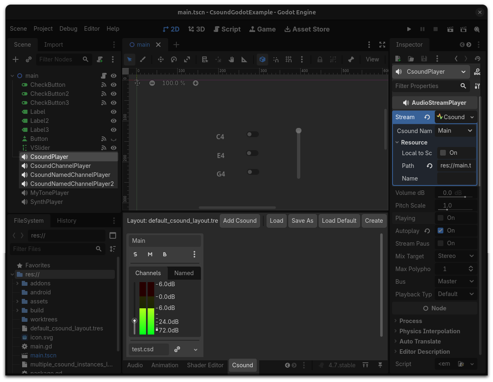
1 <CsoundSynthesizer>
2 <CsOptions>
3 -o dac // real-time output
4 </CsOptions>
5 <CsInstruments>
6 sr = 44100 // sample rate
7 0dbfs = 1 // maximum amplitude (0 dB) is 1
8 nchnls = 2 // number of channels is 2 (stereo)
9 ksmps = 64 // number of samples in one control cycle (audio vector)
10
11 instr 1
12 // get p4 from the score line as amplitude
13 iAmp = p4
14 // get p5 from the score line as frequency
15 iFreq = p5
16 // sawtooth tone with these amplitude and frequency values
17 aOut = vco2:a(iAmp,iFreq)
18 // output to all channels
19 outall(aOut)
20 endin
21
22 massign 1, 1
23 </CsInstruments>
24 <CsScore>
25 // call instrument 1 in sequence
26 i 1 0 3 0.1 440
27 i 1 3 3 0.2 550
28 </CsScore>
29 </CsoundSynthesizer>
1 extends Node2D
2 var csound: CsoundInstance
3
4 func _ready():
5 CsoundServer.csound_layout_changed.connect(csound_layout_changed)
6 CsoundServer.csound_ready.connect(csound_ready)
7
8 func csound_layout_changed():
9 csound = CsoundServer.get_csound("Main")
10
11 func csound_ready(csound_name):
12 if csound_name == "Main":
13 csound.send_control_channel("cutoff", 1)
14
15 func _on_check_button_toggled(toggled_on: bool):
16 if toggled_on:
17 csound.note_on(0, 60, 90)
18 else:
19 csound.note_off(0, 60)
godot-lv2-host is a GDExtension that allows using LV2 audio plugins in Godot and supports the following platforms: Windows, macOS and Linux.
LV2 is an extensible open standard for audio plugins. LV2 has a simple core interface, which is accompanied by extensions that add more advanced functionality.
Many types of plugins can be built with LV2, including audio effects, synthesizers, and control processors for modulation and automation.
godot-lv2-host allows using all the existing open-source LV2 audio plugins in Godot.
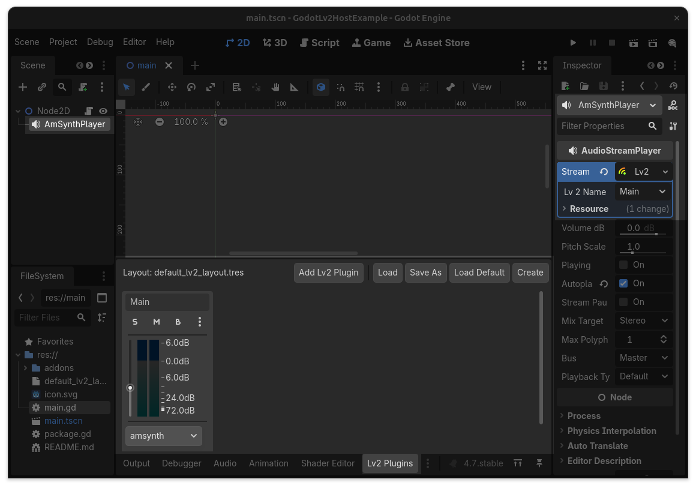
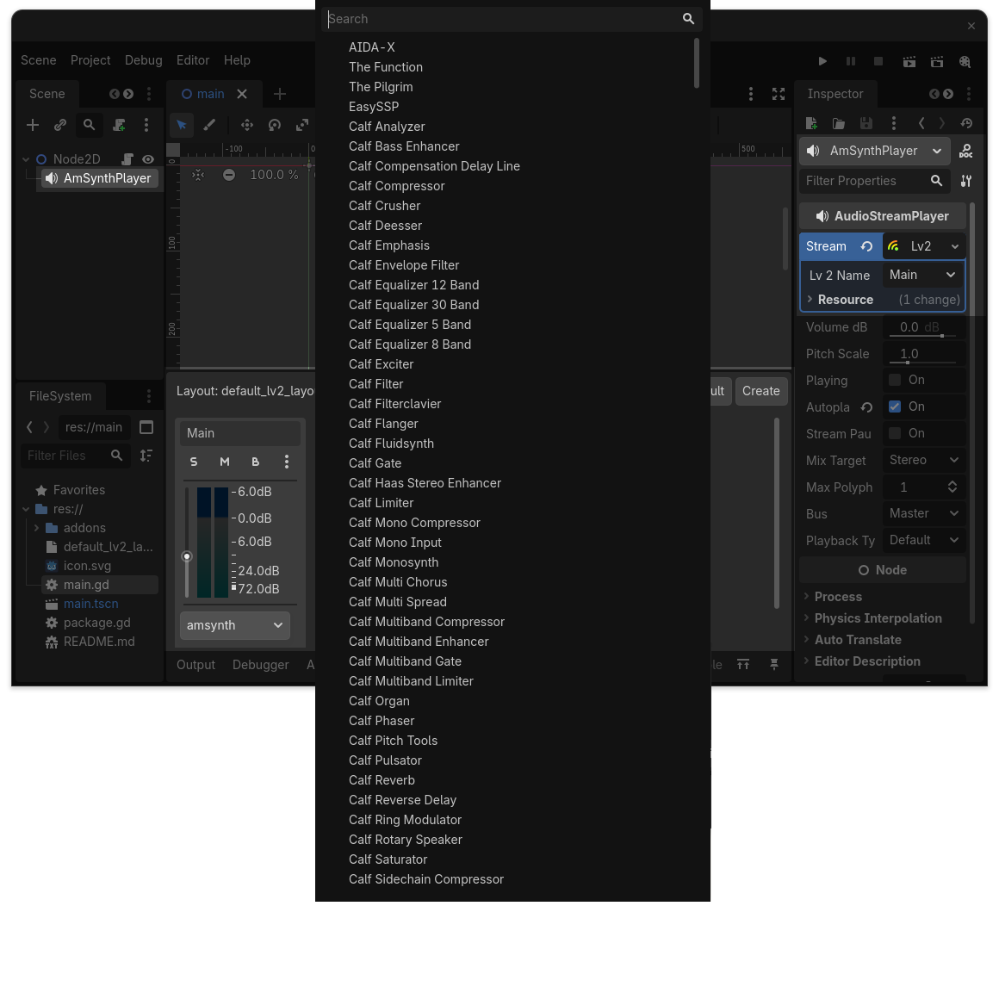
1 extends Node2D
2 var amsynth: Lv2Instance
3
4 const VOLUME = 14
5
6 func _ready():
7 Lv2Server.lv2_ready.connect(lv2_ready)
8
9 func lv2_ready(name):
10 amsynth = Lv2Server.get_instance(name)
11 amsynth.send_input_control_channel(VOLUME, 1)
12
13 func _on_check_button_toggled(toggled_on: bool):
14 var bus = 0
15 var channel = 0
16 var note = 60
17 var velocity = 90
18
19 if toggled_on:
20 amsynth.note_on(bus, channel, note, velocity)
21 else:
22 amsynth.note_off(bus, channel, note)
godot-vst3-host is a GDExtension that allows using VST3 audio plugins in Godot and supports the following platforms: Windows, macOS and Linux.
VST3 is an open source audio plug-in software interface that integrates virtual instruments and effects units into digital audio workstations.
VST3 and similar technologies use digital signal processing to simulate traditional recording studio hardware in software.
godot-vst3-host allows using thousands of existing commercial and freeware VST3 audio plugins in Godot.
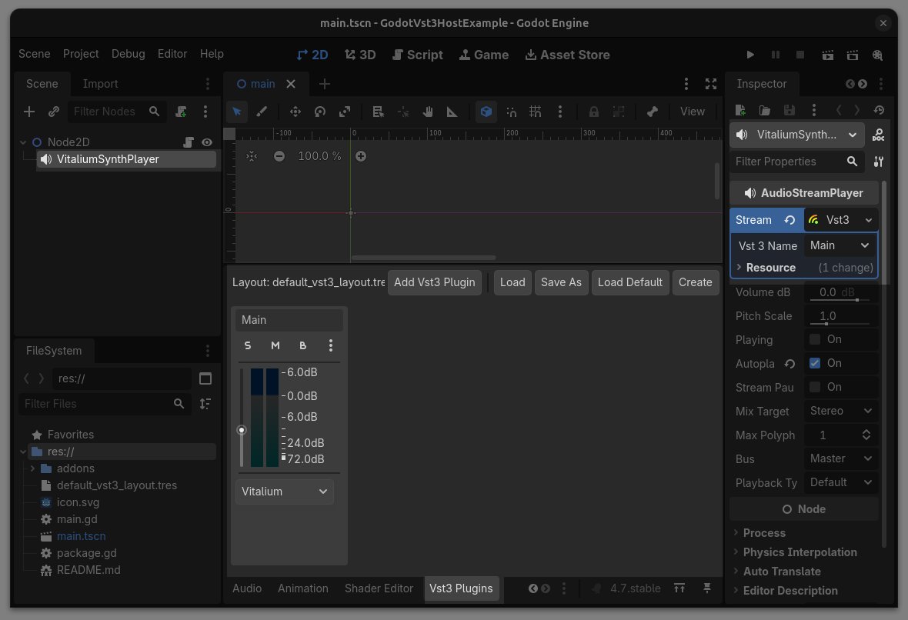
1 extends Node2D
2 var amsynth: Vst3Instance
3
4 const VOLUME = 462
5
6 func _ready():
7 Vst3Server.vst3_ready.connect(vst3_ready)
8
9 func vst3_ready(name):
10 amsynth = Vst3Server.get_instance(name)
11 amsynth.send_input_parameter_channel(VOLUME, 1)
12
13 func _on_check_button_toggled(toggled_on: bool):
14 var bus = 0
15 var channel = 0
16 var note = 60
17 var velocity = 90
18
19 if toggled_on:
20 amsynth.note_on(bus, channel, note, velocity)
21 else:
22 amsynth.note_off(bus, channel, note)
godot-distrho is a GDExtension that uses DISTRHO to allow building LV2 and VST3 audio plugins using Godot and supports the following platforms: Windows, macOS and Linux.
DISTRHO is an open-source C++ framework for building cross-platform audio plugins. It handles plugin formats such as LV2, VST, CLAP, and JACK, but normally requires native C++ development and separate builds for each target platform.
godot-distrho bridges this workflow with Godot, allowing Godot projects to become part of an audio plugin system while DISTRHO handles the plugin format layer.
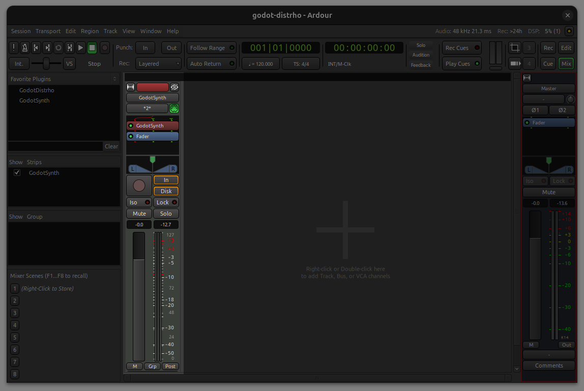
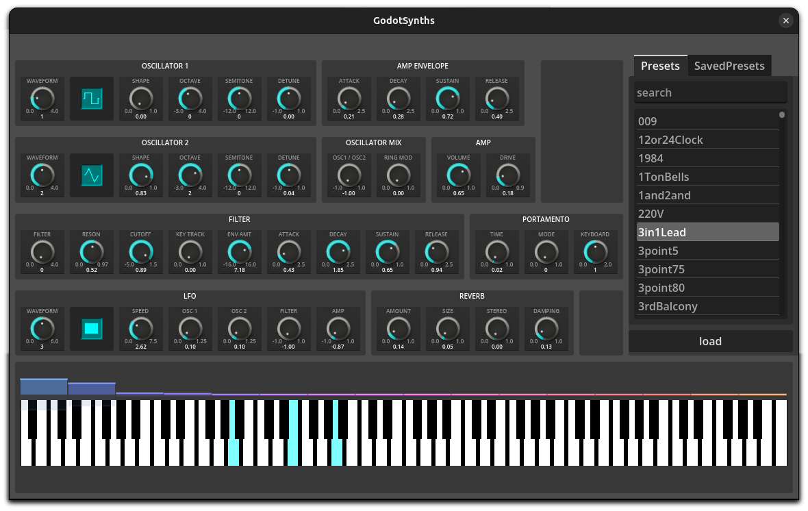
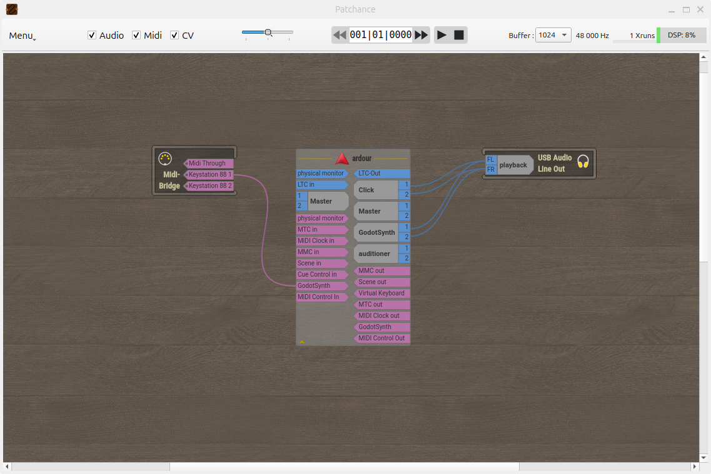
1 #distrho_ui_instance.gd
2
3 extends DistrhoUIInstance
4
5 func _init() -> void:
6 DistrhoUIServer.set_distrho_ui(self)
1 #distrho_plugin_instance.gd
2
3 extends DistrhoPluginInstance
4
5 func _init() -> void:
6 DistrhoPluginServer.set_distrho_plugin(self)
7
8 func get_name() -> String:
9 return "GodotSynth"
10
11 func get_label() -> String:
12 return "godot-synth"
13
14 func get_description() -> String:
15 return "Godot Synth"
16
17 func get_parameters() -> Array:
18 return parameters.map(DistrhoPluginServer.create_parameter)
19
20 func get_input_ports() -> Array:
21 return input_ports.map(DistrhoPluginServer.create_audio_port)
22
23 func get_output_ports() -> Array:
24 return output_ports.map(DistrhoPluginServer.create_audio_port)
1 #distrho_ui.gd
2
3 extends Node2D
4
5 func _ready() -> void:
6 DistrhoUIServer.parameter_changed.connect(_on_parameter_changed)
7 DistrhoUIServer.state_changed.connect(_on_state_changed)
8
9 func _input(input_event: InputEvent) -> void:
10 if input_event is InputEventMIDI:
11 var midi_event: InputEventMIDI = input_event
12 if midi_event.message == MIDI_MESSAGE_NOTE_ON:
13 DistrhoUIServer.send_note_on(midi_event.channel,
14 midi_event.pitch,
15 midi_event.velocity)
16 if midi_event.message == MIDI_MESSAGE_NOTE_OFF:
17 DistrhoUIServer.send_note_off(midi_event.channel, midi_event.pitch)
18
19 func _on_parameter_changed(index: int, value: float) -> void:
20 print("UI: Parameter Changed: index: ", index, " value: ", value)
21
22 func _on_state_changed(key: String, value: String) -> void:
23 print("UI: State Changed: index: ", key, " value: ", value)
24
25 func _on_amsynth_parameter_changed(parameter: int, value: float) -> void:
26 print ("parameter ", parameter, " value = ", value)
27 DistrhoUIServer.set_parameter_value(parameter, value)
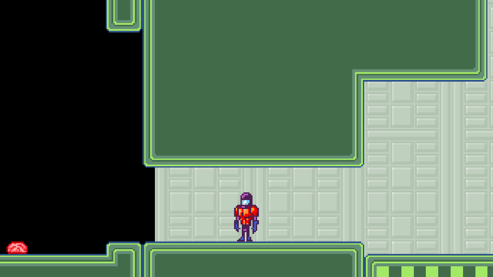
This work builds on the efforts of many open-source developers and audio communities.
Special thanks to the contributors and maintainers of:
Their work made these integrations possible.
The projects are open source and available to explore, use, and contribute to. I’m also available for collaboration, integration work, and custom audio tooling.